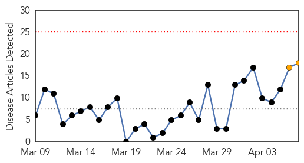
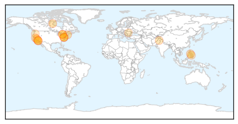
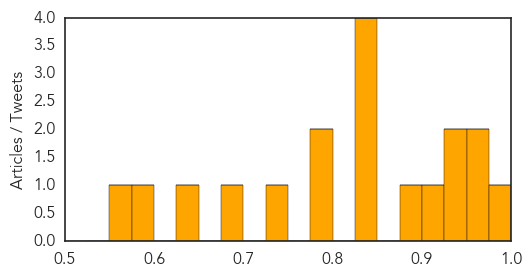

Measles
30-Day Web Trend
0 alerts, 2 warnings

30-Day Twitter Trend
0 alerts, 0 warnings

Article Locations
Article Confidences
Top Articles:
- 0.975
- Think We're Rid of Measles? Think Again
- 0.962
- Public Health Advocates Try to Reach People Who Refuse to Vaccinate
- 0.950
- Failure to vaccinate is reviving diseases that were nearly eradicated, health officials say
- 0.949
- State, local health officials issue measles warning
- 0.939
- Measles in Canada: Why this infectious disease is spreading
- 0.916
- Measles risk for Abu Dhabi-Toronto flight
- 0.880
- Autism is not a symptom of vaccination
- 0.849
- Thousands of Kings of Leon fans exposed to measles in Washington State
- 0.847
- World Health Day: A not-so-healthy nation?
- 0.841
- Massive vaccination against measles in Cebu this month
- 0.839
- UC Berkeley student has measles, high state numbers
- 0.800
- Infected woman exposes 'Kings of Leon' fans to measles
- 0.782
- Anti-vaccine movement is giving diseases a 2nd life
- 0.740
- Vaccinations fall, measles rise in Oregon
- 0.688
- European measles outbreak reaches Latvia :: The Baltic Course
- 0.643
- Woman attends concert, visits public places while unknowingly contagious with measles
- 0.585
- Measles At A Rock Concert Goes Viral In A Bad Way
- 0.567
- Measles At A Rock Concert Goes Viral In A Bad Way : Shots
Top Tweets:
-
No tweets found for Apr 07, 2014
Pertussis
30-Day Web Trend
0 alerts, 0 warnings

30-Day Twitter Trend
0 alerts, 0 warnings

Article Locations

Article Confidences

Top Articles:
Top Tweets:
-
No tweets found for Apr 07, 2014